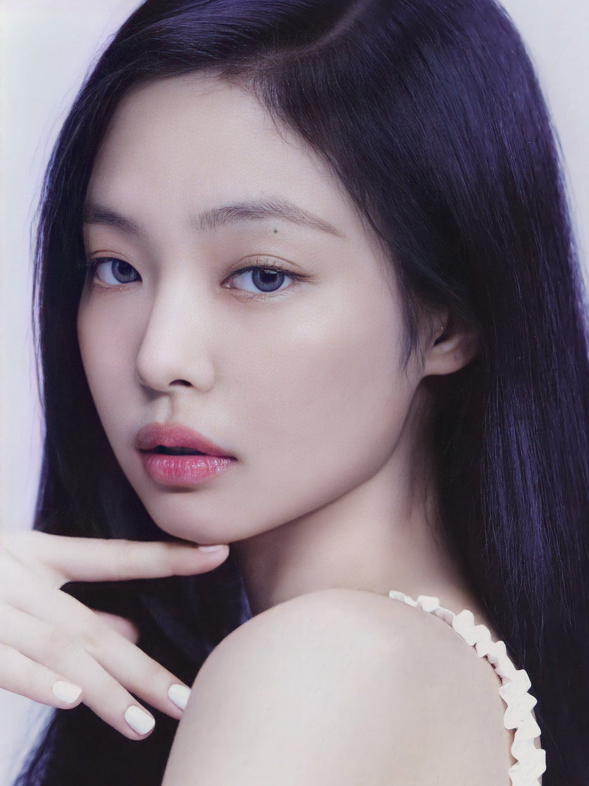

JENNIE RUBY JANE
Jennie Kim (Korean: 김제니; born January 16, 1996), known mononymously as Jennie, is a South Korean singer and rapper. Born and raised in South Korea, Jennie studied in New Zealand for five years before returning to South Korea in 2010. She debuted as a member of the girl group Blackpink, formed by YG Entertainment, in August 2016. In November 2018, Jennie made her debut as a solo artist with the single "Solo". The song was commercially successful, topping both the Gaon Digital Chart and Billboard's World Digital Songs chart. In 2023, she will be making her acting debut in the HBO series The Idol, under the stage name Jennie Ruby Jane.